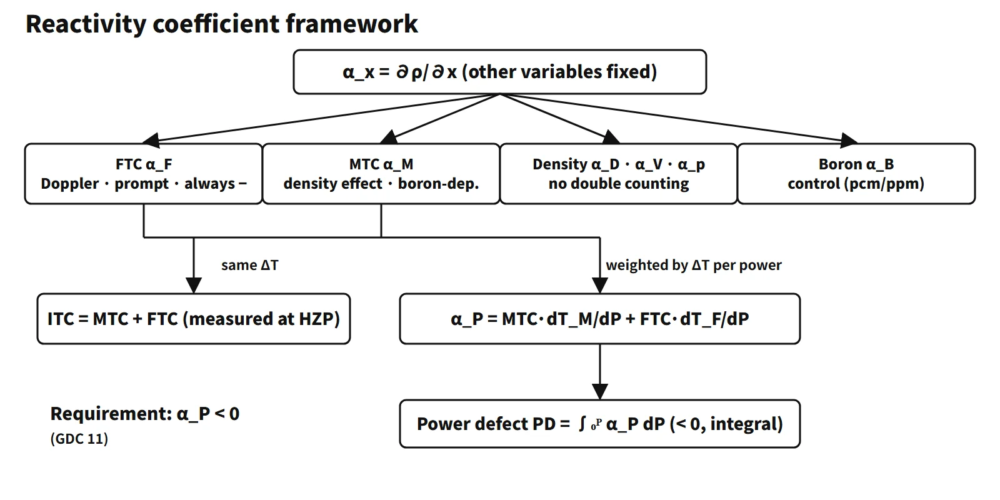

Reactor Physics & Kinetics · C-RX-023
Reactivity Coefficients — Sign, Magnitude, Time Scale and Cycle Trend in One Framework
Seven coefficients in one table: which are always negative, which change sign with boron, which act at once and which lag, and how they move over the cycle.
A reactivity coefficient is the partial derivative αx = ∂ρ/∂x: how much the reactivity changes when one core state variable x changes by one unit while the others are held fixed. With ρ = (k − 1)/k, it is written in "pcm per unit of the variable", such as pcm/°F, pcm/°C, pcm/ppm or pcm/%power (1 pcm = 10⁻⁵ Δk/k; 1 pcm/°F = 1.8 pcm/°C).
In short: "The change in reactivity per unit change of a core state variable (fuel and moderator temperature, density and void, pressure, boron, power); it governs reactor behaviour in transients, and the core is designed so that the net effect is negative in the power operating range." This entry organizes the framework only.
Principle and mechanism
Two conventions when using coefficients
- They are partial derivatives. αF is the value obtained by changing only the fuel temperature with the moderator temperature held fixed. In a real transient several variables change together, so the feedback reactivity is written as a sum, ρfb = αF·ΔTF + αM·ΔTM + αV·Δv + αp·Δp. A density decrease and voids are the same physical effect; define the fixed conditions so that it is not counted twice.
- A coefficient (derivative) is not a defect (integral). Power defect PD = ∫αP dP; temperature defect = ∫ITC dT. A coefficient is a slope (pcm per unit), a defect an accumulated amount (pcm).
Reactivity coefficients are inputs to the point-kinetics models of accident analysis. For each event the end of the range that makes the result worse (maximum or minimum) is chosen conservatively.
The seven coefficients
- Fuel temperature coefficient (FTC, Doppler) αF = ∂ρ/∂TF: the U-238 resonances broaden by the Doppler effect and self-shielding weakens, so resonance absorption increases (p↓). In low-enriched light-water reactors it is always negative; a representative value for a large PWR is −1 to −2 pcm/°F.
- Moderator temperature coefficient (MTC) αM = ∂ρ/∂TM: the main player is the decrease in water density. Reduced moderation and increased leakage (negative) compete with reduced absorption by water and dissolved boron (f↑, positive). Its sign can therefore change with boron concentration.
- Moderator density coefficient αD = ∂ρ/∂ρw: the substance behind the MTC. αM ≈ αD·(∂ρw/∂T), with ∂ρw/∂T < 0. In an under-moderated design αD > 0.
- Void coefficient αV = ∂ρ/∂v: a void is locally zero density, so it is negative in an under-moderated light-water reactor. In a PWR, with only local boiling, its effect is small; in a BWR it is the main feedback.
- Pressure coefficient αp = ∂ρ/∂p: in a PWR, higher pressure increases water density and moderation, so it is small and positive, with negligible practical effect. Since it is the same density effect (αp ≈ αD·∂ρw/∂p), the more negative the MTC, the more positive the pressure coefficient tends to be.
- Boron worth αB = ∂ρ/∂CB: about −5 to −15 pcm/ppm in commercial PWRs, tending to grow in magnitude as burnup proceeds. It is not a feedback coefficient but the differential worth of a control means; it is grouped with the others because boron concentration decides the sign of the MTC.
- Power coefficient αP = dρ/dP: for a PWR (voids neglected) αP = MTC·dTM/dP + FTC·dTF/dP (pcm/%power), a combined coefficient that weights the individual coefficients by the temperature change per unit power.
Added to these is the measurement combination, the isothermal temperature coefficient ITC = MTC + FTC: the coefficient when fuel and moderator change by the same ΔT, usually negative. At BOC HZP, however, if the MTC is positive and larger than the magnitude of the FTC, the ITC can be positive. Distinguish it from the power coefficient by the form of the equation.
Prompt and delayed: time scales divide the roles
- The FTC is prompt. Heat is generated inside the fuel, so fuel temperature follows a power change without delay, and Doppler feedback responds immediately to that fuel temperature. This is why the textbook (Lamarsh) calls it the "prompt temperature coefficient"; it turns over the first power peak of a reactivity accident.
- The MTC and the density and void coefficients are delayed. They act only after heat has passed from pellet → gap → cladding → coolant, so they lag by several seconds (an educational example of the fuel thermal time constant is about 5 s).
- Boron is control, not feedback. Limited by dilution and injection rates, it acts over minutes to hours.
Magnitudes differ too. The FTC may be smaller in absolute value than the MTC, but in a power transient the fuel temperature swings far more than the moderator temperature, so its effect is fast and large. It is the Doppler effect that in practice fulfils the "prompt" requirement of design criteria such as GDC 11 (US 10 CFR 50 Appendix A).
What it means in a plant
Cycle trends at a glance
![Matrix of seven reactivity coefficients with columns for definition, sign, typical PWR value, response speed and BOC-to-EOC trend: FTC always negative, −1 to −2 pcm/°F, immediate, more negative; MTC positive possible at high boron and low power, HFP BOC 0 to −10 to EOC −30 to −45 pcm/°F, seconds; density positive and void negative; pressure small positive; boron worth −5 to −15 pcm/ppm, minutes to hours; power coefficient about −12 to −21 pcm/%; ITC usually negative; below, a fuel-rod heat-path illustration and a logarithmic time axis from 0.1 s to 1 h showing Doppler immediate, moderator seconds and boron minutes to hours](../../assets/images/concepts/c-rx-023-reactivity-coefficients/fig1-reactivity-coefficient-matrix.webp)
| Coefficient | BOC → EOC | Main cause |
|---|---|---|
| FTC (temperature coefficient, pcm/°F) | More negative | Build-up of Pu-240 (1.06 eV resonance) |
| Doppler power coefficient (pcm/%) | Can become less negative | Gap closure reduces dTF/dP |
| MTC (full power) | 0 to −10 → −30 to −45 pcm/°F | Boron dilution (main cause) |
| Boron worth | Magnitude tends to increase | Lower boron concentration, spectrum |
| Power coefficient | About −12 → −21 pcm/% | Mainly the MTC change |
| ITC | More negative | Dominated by the MTC change |
The MTC can rise to between 0 and a few pcm/°F positive at BOC hot zero power (HZP). The power-coefficient values are from a Westinghouse-type educational example core (100 % power defect about −1,200 pcm at BOL and about −2,100 pcm at EOL).
Behaviour when operating variables change
- Power increase: fuel temperature rises immediately, so Doppler negative reactivity enters first; a few seconds later the MTC share is added as coolant temperature rises, and the core settles at a new equilibrium. The power defect is compensated by rod withdrawal or boron dilution.
- Coolant temperature decrease (main steam line break, lower feedwater temperature): with a negative MTC, positive reactivity is inserted. EOC, where the MTC is most negative, is the most limiting.
- Boron concentration increase: the MTC becomes less negative (possibly positive). This is handled by lowering the boron concentration with burnable absorbers.
- Pressurizer pressure increase: in a PWR, a small positive reactivity with negligible practical effect.
- Low-temperature criticality: the MTC is less negative at lower temperature, so a minimum temperature for criticality is set.
Worked example: power defect
With αF = −2.0 pcm/°C and αM = −5.0 pcm/°C, raising power from 0 to 100 % heats the fuel from 300 to 800 °C and the moderator from 300 to 320 °C. The power defect is (−2.0)(500) + (−5.0)(20) = −1,100 pcm, an average power coefficient of −11 pcm/%power. Compensating it takes 110 steps of control rods at 10 pcm/step, or 110 ppm of boron dilution at −10 pcm/ppm. Note that the power coefficient here weights each coefficient by its own temperature change; writing it as MTC + FTC would give the ITC instead.
Safety analysis uses both ends
- Least negative (BOC, low power): conservative for heat-up and reactivity-insertion events such as loss of load and rod withdrawal at low power, and for the ATWS pressure peak.
- Most negative (EOC): conservative for return to criticality and power in cooldown events.
Measurement: the ITC in startup physics tests
The required items of the startup physics tests after refuelling are the critical boron concentration, control rod worth and the isothermal temperature coefficient (ANSI/ANS-19.6.1 "Reload Startup Physics Tests for PWRs", current 2019 edition).
- At hot zero power (HZP), hold rods and boron fixed.
- Raise and lower Tavg by a few °F (with steam dump, etc.) and measure Δρ with a reactivity computer.
- Because power is zero, fuel and moderator change to the same temperature, so ITC = Δρ/ΔT.
- Separate MTC = ITC − FTC (calculated) and compare it with the COLR upper limit.
Acceptance is judged against a tolerance around the predicted value (e.g. ±2 pcm/°F at some units; it differs by methodology and unit). The FTC is not measured directly; the calculated value is used. Near EOC, meeting the MTC lower limit is confirmed by a surveillance measurement or an approved conditional exemption method.
Regulatory and design criteria
- For example, US 10 CFR 50 Appendix A, GDC 11: in the power operating range, the net effect of the prompt inherent nuclear feedback shall tend to compensate for a rapid increase in reactivity. GDC 12 covers suppression of power oscillations.
- The actual form of the sign requirement: the rules do not require "every coefficient negative". The FTC is always negative, the MTC is kept at or below the COLR upper limit (positive allowed at BOC low power), and the core is designed so that the power coefficient is negative over the whole power operating range.
- NUREG-0800 SRP 4.3: reviews the calculated values and uncertainties of density effects (in the form of temperature, void and density coefficients), the Doppler coefficient and power coefficients.
- STS NUREG-1431 Rev. 5, LCO 3.1.3: keeps the MTC within the COLR limits. For example, the Ginna Cycle 39 COLR gives an upper limit of +5 pcm/°F at BOL HZP (below 70 % RTP) and a lower limit of −44.6 pcm/°F at EOL full power. There are no LCOs on the FTC or the power coefficient themselves.
- IAEA: SSR-2/1 (Rev. 1, 2016), SSG-52 (2019).
Easily confused pairs
| Pair | First | Second | How to tell |
|---|---|---|---|
| Coefficient vs defect | α = ∂ρ/∂x (pcm per unit) | ∫α dx (pcm) | Units |
| ITC vs power coefficient | MTC + FTC | Σα·dT/dP | Weighting or not |
| Density vs void coefficient | Single-phase density change | Change in void fraction | Same effect: never double-count |
| Feedback coefficient vs worth | Created by the state change itself | Control means (boron, rods) | Operator action or not |
| Doppler temperature vs Doppler power coefficient | More negative at EOC | Can be less negative at EOC | pcm/°F vs pcm/% |
Key points at a glance
- Definition: αx = ∂ρ/∂x, change in reactivity per unit change of a state variable (partial derivative).
- FTC (Doppler): U-238 resonance broadening → always negative, prompt, PWR −1 to −2 pcm/°F, more negative with burnup (Pu-240).
- MTC: water density effect, boron-dependent, can be positive at BOC → EOC −30 to −45 pcm/°F.
- Density and void coefficients: under-moderated → negative; small in PWRs, main feedback in BWRs.
- Pressure coefficient: small positive in PWRs, negligible effect.
- Boron worth: −5 to −15 pcm/ppm, a control means.
- Combinations: ITC = MTC + FTC (measured at HZP); αP = MTC·dTM/dP + FTC·dTF/dP.
- Behaviour: power ↑ → immediate Doppler −ρ → delayed MTC −ρ → new equilibrium; cooldown events limiting at EOC.
- Requirements: negative power coefficient (e.g. GDC 11); MTC within COLR limits.
